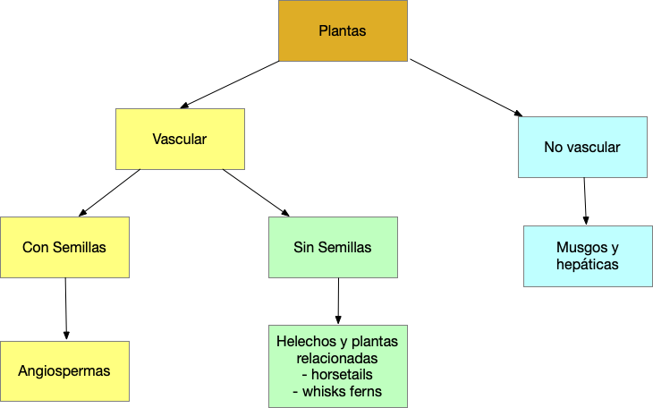

Descripción de los tipos de estructura/arquitectura/forma de vida de las plantas
knitr::include_graphics("Graficos/Main_Plant_groups.png") *** ### Objetivos 2
Definen y reconocer las siguientes forma de vida de las Plantas
Lenõsas
Herbáceas
Localización
Para más detalles vea estos enlaces:
Vea este enlace para las formas de Vida de las Plantas
Vea este enlace para más definiciones con forma de vida de plantas
Haz una lista de cada uno de estos términos y su definición, asegúrate que la definición sea especifica.
Definen y reconocer las siguientes forma de vida de las Briofitas
¿Cual son los tres grupos principal de briofitas?
¿Como se diferencia estos grupos?
Briófitas Bryophyte
Clasificación de Briófitas Classification
En el patio de su casa y vecindario. Buscar los siguientes tipos de forma de planta
+ Tomar una fotos de estos tipos de forma de planta.
- Arboles
- Arbustos
- Herbáceas
- Suculentas
- Gramas
- Juncias (sedges)
- Enredaderas
- lianas (¿cual es la diferencia entre una enredadera y una liana?)
- herbaceas (sin lignina)
+ Identificar correctamente la forma de crecimiento para cada foto
**Someter el trabajo por MSTeam. NO más tarde del día antes de la próxima clase a las 11:59pm.**
El trabajo es individual ( 15 puntos)
+ El tarabajo tiene que ser sometido en forma de .html, word o pdf.
+ Bien organizado y profesional.
- Trabajos presentado de forma desorganizado tendrán automaticamente -5 en puntuación.
{kind=link}